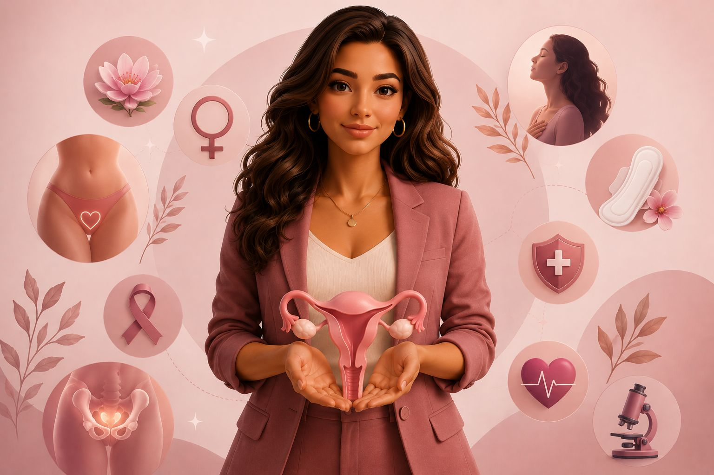

Plataforma educativa voltada à saúde da mulher, com conteúdos acessíveis e confiáveis sobre prevenção, autocuidado e bem-estar feminino.

O Conecta Mulheres é uma plataforma educativa criada por estudantes da área da saúde com o objetivo de promover informação acessível sobre saúde feminina, prevenção e autocuidado.
O projeto conta com participação de estudantes da área da saúde e colaboradores convidados, promovendo educação em saúde de forma acessível e humanizada.
Você já percebeu mudanças no humor, no corpo ou até na energia alguns dias antes da menstruação? Isso acontece por causa das alterações hormonais naturais do ciclo menstrual e é mais comum do que parece. A TPM (Tensão Pré-Menstrual) é um conjunto de sintomas físicos, emocionais e comportamentais que podem surgir dias antes da menstruação. Essas mudanças acontecem principalmente por variações dos hormônios femininos, como estrogênio e progesterona. Entre os sintomas mais comuns da TPM estão: irritabilidade, alterações de humor, sensibilidade emocional, ansiedade, tristeza, inchaço, retenção de líquido, dor de cabeça, cólicas, cansaço excessivo, sensibilidade nas mamas e aumento do apetite. Cada mulher pode sentir a TPM de uma forma diferente. Algumas apresentam sintomas leves, enquanto outras têm impactos maiores na rotina e no bem-estar. Além da TPM, as alterações hormonais femininas podem acontecer em diferentes fases da vida, comoadolescência, gravidez, pós-parto e menopausa. Manter hábitos saudáveis, como alimentação equilibrada, atividade física, sono adequado e redução do estresse, pode ajudar no controle dos sintomas. Quando os sintomas se tornam intensos, é importante buscar orientação médica.
O HPV é uma infecção sexualmente transmissível muito comum, que pode causar verrugas genitais e, em alguns casos, câncer. A principal forma de prevenção é a vacina contra o HPV, além do uso de preservativo em todas as relações sexuais e da realização de exames preventivos regularmente. A vacina é segura, eficaz e ajuda a proteger contra os tipos de HPV mais perigosos. Mesmo quem já iniciou a vida sexual pode se beneficiar dela. Também é importante manter acompanhamento médico e procurar ajuda ao notar qualquer alteração na região íntima. Informação e prevenção são essenciais para cuidar da saúde.
Durante a gravidez e o pós-parto, o corpo feminino passa por diversas alterações hormonais e físicas, tornando os cuidados com a saúde íntima ainda mais importantes. É comum haver aumento do corrimento, maior sensibilidade na região íntima e mudanças na flora vaginal. Por isso, manter uma boa higiene, usar roupas leves e evitar produtos irritantes ajuda a prevenir infecções e desconfortos. No pós-parto, o corpo precisa de tempo para se recuperar. Respeitar o período de recuperação, manter acompanhamento médico e observar sinais como dor, mau cheiro, coceira ou sangramento excessivo é fundamental. Cuidar da saúde íntima nessa fase é também cuidar do bem-estar, da autoestima e da saúde da mulher.
A menopausa é uma fase natural da vida da mulher, marcada pelo fim da menstruação e pelas alterações hormonais, principalmente na produção de estrogênio. Durante esse período, é comum surgirem sintomas como ondas de calor, alterações de humor, insônia, ressecamento íntimo, cansaço e diminuição da libido. Cada mulher vivencia essa fase de uma maneira diferente. Alguns cuidados podem ajudar a melhorar a qualidade de vida, como manter uma alimentação equilibrada, praticar atividade física, dormir bem, cuidar da saúde emocional e realizar acompanhamento médico regularmente. A menopausa não representa o fim da feminilidade, mas uma nova fase que merece atenção, acolhimento e cuidado com a saúde física e emocional.